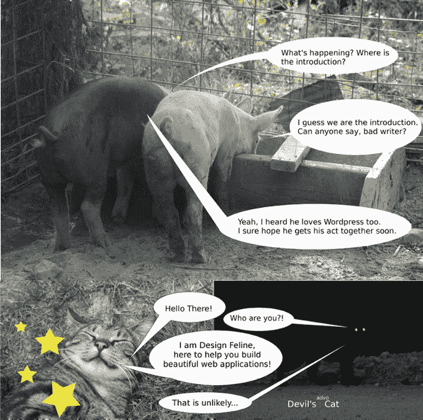

Kelt Dockins
Design Patterns in PHP and Laravel

Kelt Dockins
Dolph, Arkansas, USA
Any source code or other supplementary materials referenced by the author in this text are available to readers at
www.apress.com
. For detailed information about how to locate your book’s source code, go to
www.apress.com/source-code/
. Readers can also access source code at SpringerLink in the Supplementary Material section for each chapter.
ISBN 978-1-4842-2450-2e-ISBN 978-1-4842-2451-9
DOI 10.1007/978-1-4842-2451-9
Library of Congress Control Number: 2016961807
© Kelt Dockins 2017
This work is subject to copyright. All rights are reserved by the Publisher, whether the whole or part of the material is concerned, specifically the rights of translation, reprinting, reuse of illustrations, recitation, broadcasting, reproduction on microfilms or in any other physical way, and transmission or information storage and retrieval, electronic adaptation, computer software, or by similar or dissimilar methodology now known or hereafter developed.
Trademarked names, logos, and images may appear in this book. Rather than use a trademark symbol with every occurrence of a trademarked name, logo, or image we use the names, logos, and images only in an editorial fashion and to the benefit of the trademark owner, with no intention of infringement of the trademark. The use in this publication of trade names, trademarks, service marks, and similar terms, even if they are not identified as such, is not to be taken as an expression of opinion as to whether or not they are subject to proprietary rights.
While the advice and information in this book are believed to be true and accurate at the date of publication, neither the authors nor the editors nor the publisher can accept any legal responsibility for any errors or omissions that may be made. The publisher makes no warranty, express or implied, with respect to the material contained herein.
Printed on acid-free paper
Distributed to the book trade worldwide by Springer Science+Business Media New York, 233 Spring Street, 6th Floor, New York, NY 10013. Phone 1-800-SPRINGER, fax (201) 348-4505, e-mail orders-ny@springer-sbm.com, or visit www.springer.com. Apress Media, LLC is a California LLC and the sole member (owner) is Springer Science + Business Media Finance Inc (SSBM Finance Inc). SSBM Finance Inc is a Delaware corporation
Introduction

Hello there. I see you’ve met a few characters that will be in this book. Don’t worry; there will be plenty more where that came from!
Please allow me to introduce myself. I’m Kelt. Together we are going to explore design patterns together. Not only that, but we will learn more about PHP and Laravel. If you’re looking to improve your knowledge on any of these subjects, this book will help you. Be forewarned: there is a ton of really bad humor in this book. Here is an example.
My pappy once told me, two days ago, that all great books have at least three things. He asked if I knew what those three things were. I replied,
- 1.Words
- 2.Sentences
- 3.Paragraphs
Wrong! He slapped me with a trout. He corrected me:
- 1.Cuss words
- 2.Death sentences
- 3.Paraphernalia, sex, drugs, and alcohol
“But that’s more than thre…,” I questioned him, but I was reprimanded with yet another trout slap. “Okay,” I said. I quickly shut my yapper. Reader beware, this book has all those things. Don’t let your kids read this unless they are over 30 and living in your basement. In that case, tell them to read this book and go get a job.
Disclaimer
I don’t do drugs. This book might make you think otherwise but honestly, I don’t need drugs to act stupid. Yes, really.
Who Is This Book For?
Anyone with a sawbuck can be the proud owner of this book. That’s the only requirement. But it will help a lot if you already know at least a little bit about PHP or Laravel. If you work on web apps and you’ve ever found yourself cussing at your past self from 6 months ago, then you’ll probably enjoy this book.
You will not be interested in this book if
- 1.You are a zombie who eats cats.
- 2.You don’t have $10.
- 3.You’d rather use assembly language than PHP.
- 4.You invented the Internet.
- 5.You can bench press 624lbs, exactly.
- 6.You hate reading really long lists.
- 7.You think cows should never be given a typewriter.
- 8.You think David Hasselhoff is cute.
- 9.You were born yesterday.
- 10.You run marathons…
- 11.… backwards.
- 12.You’ve never jumped on a bed.
- 13.You like to spit on pigs.
- 14.You didn’t see Watchmen movie only because of the changes made to the story.
- 15.You would use php-snow 1 for every project, ever.
- 16.You think Ents are dumb.
- 17.In fact, if you hate Lord of the Rings , stop now and I’ll give you your money back.HATER.
- 18.You pass gas in elevators and smile wildly at other people at the same time.
- 19.That last one only counts on elevators in buildings over 50 stories high.
- 20.You work for the FBI or CIA. You are cool but please don’t read my book.
- 21.You have had unusual thoughts about Smurfette. Shame on you and shame on me.
- 22.You count sheep to stay awake.
- 23.You can’t read.
- 24.You still blog about TV series Full House .
- 25.You troll books (don’t ask me how).
- 26.You hold deep conversations with Nick Jr. Face 2 .
- 27.You believe aliens don’t exist.
- 28.You work for the FBI (gonna list this twice just in case you didn’t catch it the first time).
- 29.You walk like a penguin and evilly plot against Batman.
- 30.You were born the day before yesterday.
- 31.You didn’t watch The Hunger Games because you’ve already read the book.
- 32.You think Zelda is a dude in a green outfit.
- 33.You will code in Rails until the day you die (good for you, good for you).
- 34.You are not a zombie but still eat cats.
- 35.You like to wear dresses in winter and you name is Pat.
- 36.You can ignore the previous line about dresses (I have a friend who does this).
- 37.You can find your entire life story in a Dr. Seuss book.
- 38.You go to the library, find people, and tell them spoilers to great novels.
- 39.You don’t quite understand peaches.
- 40.You’ve never seen Back to the Future .
- 41.You are in a Josie and the Pussycats cover band.
- 42.You think Michael Bay should direct every movie, ever.
- 43.You are Michael Bay.
- 44.You visited the moon and didn’t bring me back a moon rock (jerk).
- 45.You can do 100 consecutive push-ups (you are too badass to be reading this book).
- 46.You were born tomorrow.
- 47.You think Chewbacca is chewing tobacco.
Did you really read this entire list? Awesome! I want to talk about gloves. Design patterns are like gloves. If they fit, wear ‘em. On the flipside, don’t try to wear gloves that don’t fit. Learning when to wear your design gloves is important. It is my hope that with the aid of this book you’ll understand when to leave the gloves off or put the gloves on. We are almost ready to get started with Laravel basics but first let’s go over the structure of this book.
Layout of the Book
The first chapter provides some Laravel basics to get started coding. The next chapter covers elementary OO concepts. From there on out, you start learning different patterns and applying them in the context of Laravel and PHP.
I created a branch for every pattern in a git repository. You can view the git repository at
https://github.com/kdocki/larasign
3
. At the beginning of every chapter will be git command to check out that chapter’s relevant code samples. You will need to clone this repository down if you want to follow along with code examples.
$> git clone git@github.com:kdocki/larasign.git
This book organizes the patterns in a similar fashion as the Gang of Four book. The GoF patterns book came out 20 years ago in 1994, and the patterns are still being seen and talked about even in 2014. To me, that is awesome. As you learn some of these patterns, you will also be using the PHP framework Laravel and hopefully pick up little bits and pieces of the framework along the way. You will see that the Laravel framework lets you write quality code. In this book, I will cover these patterns.
Creational
- Abstract Factory
- Builder
- Factory Method
- Prototype
- Simple Singleton
- Simple Factory
Structural
- Adapter
- Bridge
- Composite
- Decorator
- Facade
- Flyweight
- Proxy
Behavioral
- Chain of Responsibility
- Command
- Interpreter
- Iterator
- Mediator
- Memento
- Observer
- State
- Strategy
- Template Method
- Visitor
Contents
Index235
Contents at a Glance
About the Authorxv
About the Technical Reviewerxvii
Introductionxix
Index235
About the Author and About the Technical Reviewer
About the Author
Kelt Dockins
is a humble narcissistic web developer. He works as a full stack freelancer. He specializes in quick-to-market web applications and minimum viable products for start-ups. He has worked on small projects, medium-size projects, and even a few small-medium-sized projects. He loves being a father, a husband, and a developer. He’s worked with many programming languages such as Visual Basic 6.0, C++, Java, Perl, bash, prolog, .NET stack, HTML, CSS, JavaScript and PHP. For the last three years, he’s been using PHP and the ever-so-popular Laravel framework to stay at home and eat bacon while earning it at the same time. He does love bacon.
About the Technical Reviewer
Martin Bean
is an experienced full-stack developer, specializing in PHP and related technologies. Based in Newcastle upon Tyne, UK, he is currently team lead on a Laravel-based product, a position he took after running his own consultancy business for nearly five years.
He is also very active in the web development community. He tweets regularly as @martinbean, maintains his own blog at martinbean.co.uk, and is also co-organizer of his local PHP and Laravel user groups.